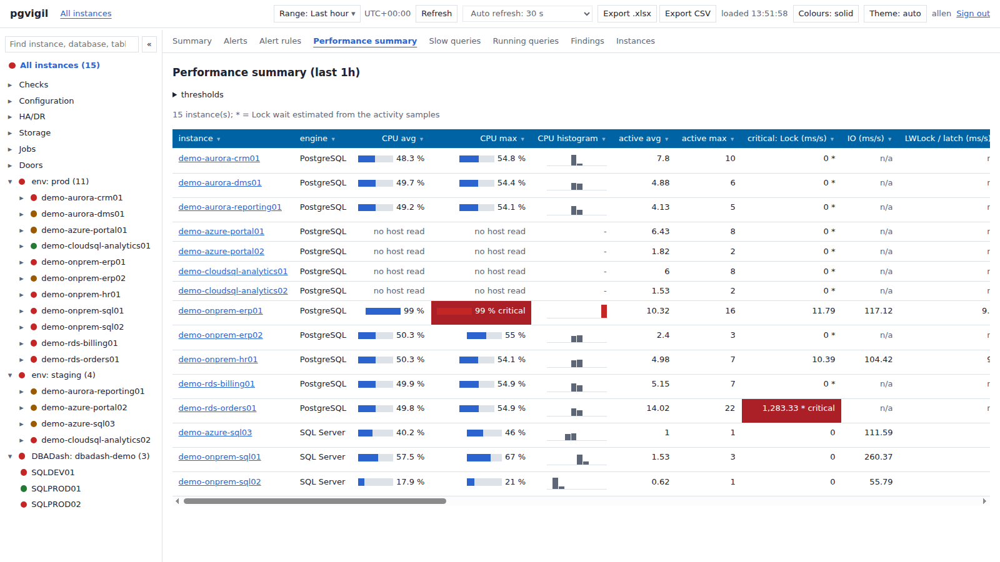
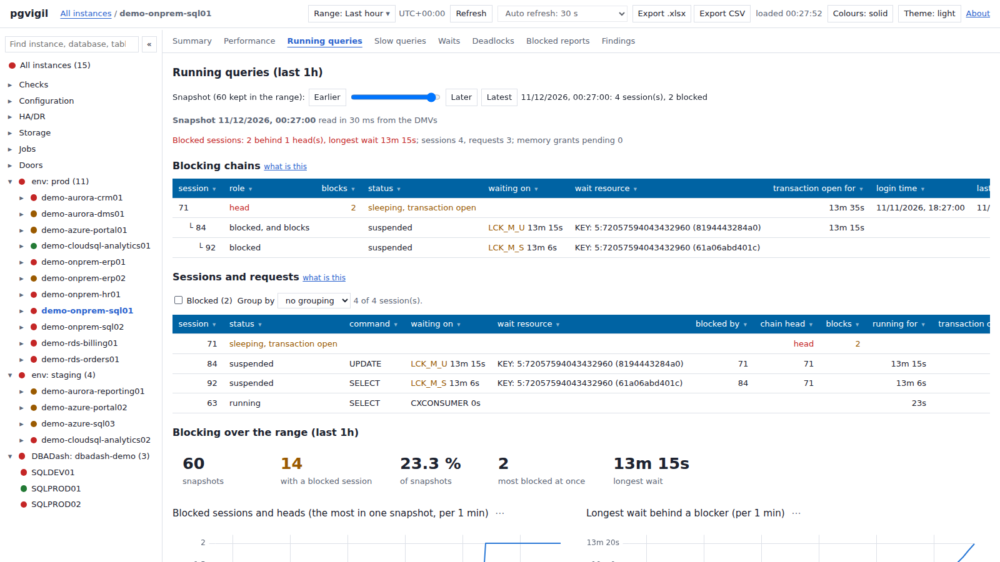
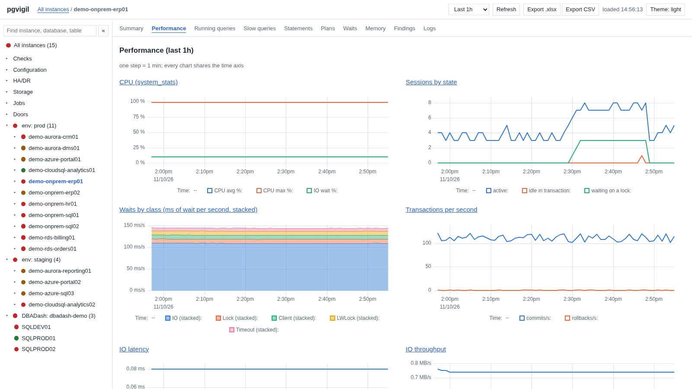
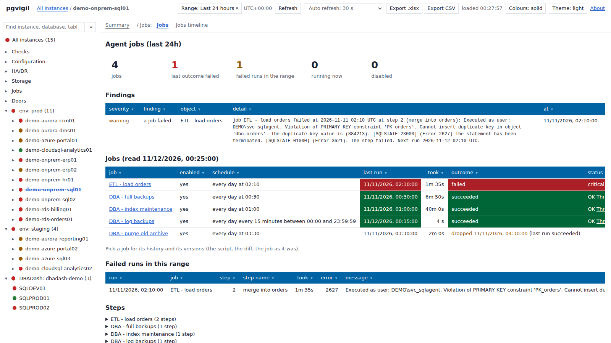
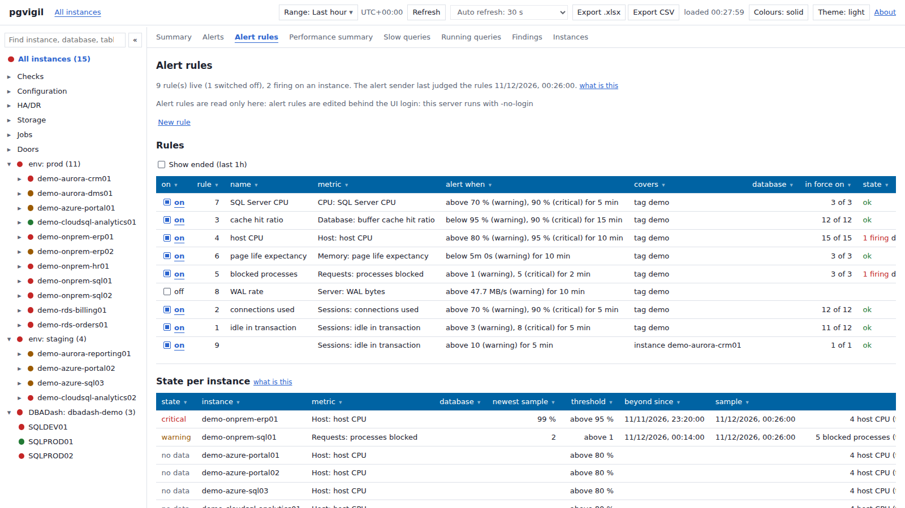

Monitoring for PostgreSQL and SQL Server
Free and open source. pgvigil reads every server on a schedule, keeps the history in a PostgreSQL database, and shows the fleet the way a DBA reads it: what is wrong, what is running, and what changed.

Ships in v0.4.0: servers pgvigil cannot reach
Some networks will not let any outside server connect to their databases. For them pgvigil v0.4.0 will add a remote collector: the same signed program in a collector-only mode, run on one Linux or Windows box inside that network. It will read PostgreSQL and SQL Server with the same read-only logins as any pgvigil, and every few minutes write what it read as a bundle of files. Your pgvigil will take each bundle in once, check it, and show those servers beside the rest of the fleet.
- Bundles of plain files: one gzip-compressed NDJSON file per view, a manifest (the instance, versions, the time window, the row count of every file, how each read ended) and SHA256 sums. A security team can open any bundle with gunzip and jq before it leaves.
- Any way out the site allows: the collector writing straight into an Azure Blob container that pgvigil polls (an Event Grid queue as a later option), or an S3 or GCS bucket, a file share, SFTP, or a one-way copy or USB for a closed network. Filebeat can carry the same files where a log pipeline is the only way out.
- Every 5 minutes by default, set shorter or longer per site. Statement text will be hashed or left out, by a setting on the site's side.
- The collector package on GitHub releases, signed, next to the offline bundle, with its setup guide.
Those servers will show "as of the last bundle": history, analysis and alerts as fresh as the interval, a site that goes quiet raised as an alert, and actions that need a live connection (ending a session, starting a job, EXPLAIN) off with the reason shown. The remote collector ships in v0.4.0.
The whole fleet on one page
One row per server with CPU, waits and IO side by side, sortable by any column, coloured only past a threshold. The Summary above counts every check across the fleet.


What is running, and who is blocking whom
The sessions at work (running, in a transaction or blocking another) sampled each minute, the blocking chain walked to its head, and the statement the head ran last. Step back through earlier minutes to see what held the locks an hour ago.


Performance over time
CPU, sessions, waits, transactions and IO on one time axis. Choose any range or a calendar period such as yesterday or the previous week; every chart opens its detail.


Jobs, backups and storage
SQL Server Agent, pg_cron and pgAgent jobs with the failed step's own error message, backups and how old they are, and every volume with its growth and the days until it is full.


Alerts on what matters
A threshold on any metric, for one server, a tag or the whole fleet, sent by email, Teams, Slack or a webhook. Nothing is sent until you set up a channel.


Where it runs
PostgreSQL 13 to 18, tested on self-hosted 13, 16 and 18 and on Amazon Aurora PostgreSQL 17. Amazon RDS, Azure Database for PostgreSQL, Google Cloud SQL and AlloyDB are recognised; they are not tested yet.
SQL Server tested on SQL Server 2017, 2019, 2022 and 2025 on Linux, on SQL Server 2016 on a Windows server, and on Amazon RDS for SQL Server (Express and Standard), Azure SQL Database (serverless, and a Basic elastic pool), Azure SQL Managed Instance (General Purpose) and Google Cloud SQL for SQL Server (Express). Windows sign-in against a real domain, a vCore elastic pool and Managed Instance Business Critical are not tested yet.
The program is one file for Linux, Windows or macOS. The history lives in a PostgreSQL database you choose.
What it does not do
- Its collector never writes to a server it watches. Ending a session or starting a job is off until you turn it on, through a login kept for that alone, and every use is logged.
- No agent runs on your database servers, and there is no telemetry: it talks to your servers, its own database, the cloud APIs you configure and your alert channels, nothing else (the Windows app also checks GitHub for a new release once a day, unless an administrator turns that off).
- It is not a hosted service: you run it, and the data stays in your own database.
- It watches databases, not Kubernetes or your applications.